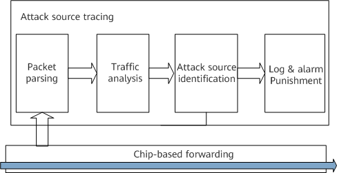

Understanding Attack Source Tracing
Attack source tracing can defend against DoS attacks. As shown in
Figure 1, attack source tracing involves four steps:
- The device parses packets to be sent to the CPU based on IP addresses, MAC addresses, and ports. A port is identified by physical port plus VLAN.
- The device counts the number of received protocol packets based on IP addresses, MAC addresses, or ports.
- When the number of packets sent to the CPU in a unit time exceeds the threshold, the device considers that an attack has occurred.
- When detecting an attack, the device sends a log or alarm to notify the administrator or directly implements punishment (for example, discarding attack packets).
Figure 1 Attack source tracing process
Attack source tracing also provides the whitelist function. After legitimate users are added to a whitelist, the device does not perform source tracing or punishment actions on packets from these whitelisted users, so that such packets can be sent to the CPU for processing. A whitelist can be flexibly configured based on ACLs or ports.